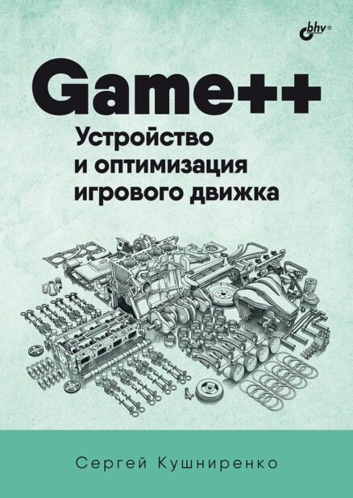
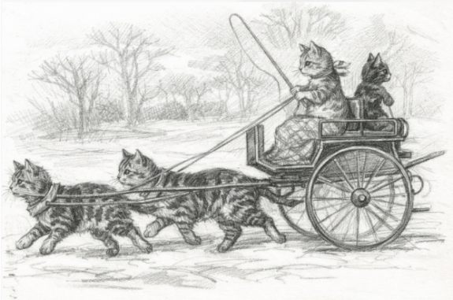

Game++. Устройство и оптимизация игрового движка
Как современный игровой движок устроен изнутри: архитектура, подсистемы и приёмы оптимизации — на практике.
Заметки о ремесле, программировании и внутренностях игр.
Глава 2 черновика PragmatiC++: перегрузки не как синтаксический сахар, а как механизм обобщённого программирования — алгоритм прежде типов, возведение в степень через квадрат, хорошие и плохие наборы перегрузок и критика дизайна std::filesystem.
↗ РемеслоКак не паниковать, попав в большую AA+ студию с кодовой базой на миллионы строк: ориентирование в чужом легаси, системы сборки, почему сеньоры не помнят код наизусть, поиск по видимым пользователю строкам, история git, кодстайл и почему исходник — последняя инстанция истины.
↗ Ненормальное программированиеРазбор 12 распространённых «истин» геймдева на C++ — где миф, где суеверие, а где народная мудрость: культ чистого C, «плохой хороший билд», цена исключений и RTTI, умные указатели и STL, полиморфизм, inline-ассемблер, template bloat, преждевременная оптимизация и проклятье пятничного коммита.

Как современный игровой движок устроен изнутри: архитектура, подсистемы и приёмы оптимизации — на практике.

Свободная книга — скачивайте бесплатно в PDF или EPUB.
Черновик книги о прагматичном и «понятном через год» C++.
Черновик книги — доступ по запросу.

Современная open-source реализация классического градостроителя Pharaoh (1999) от Impressions Games. Полная совместимость с сохранениями оригинала, кроссплатформенность и живой, читаемый код.
Об игре →
Коллекция из десятков анимированных индикаторов загрузки для Dear ImGui — спиннеры, прогресс-бары и точки в одном заголовочном файле. Просто подключаешь imspinner.h и зовёшь нужный спиннер.